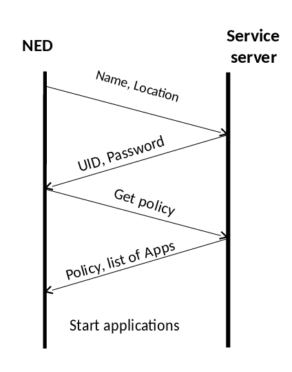
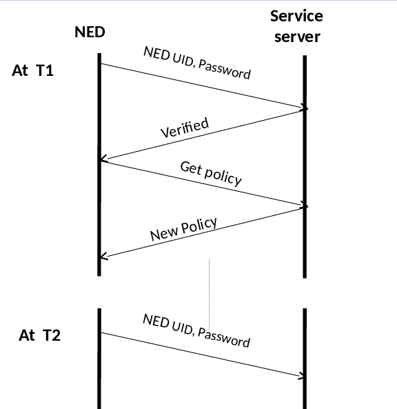
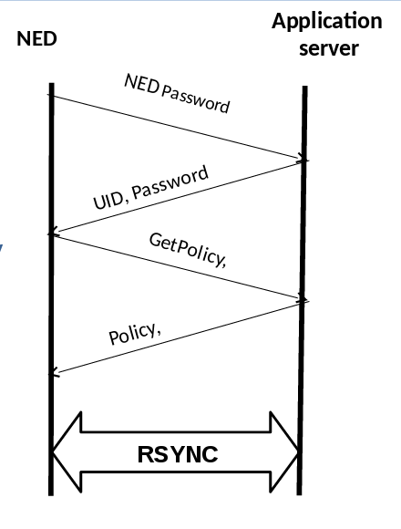
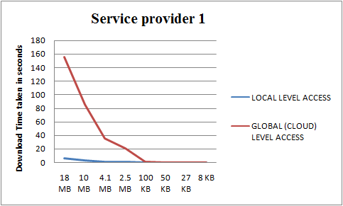
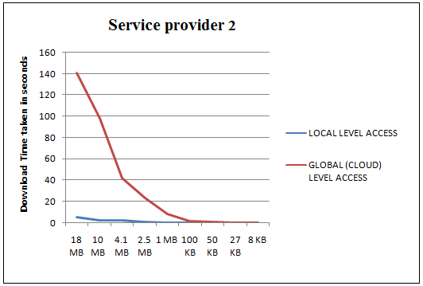
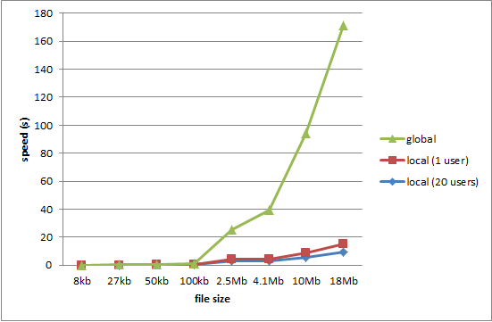

Looking at the future era of IOT, innumerable connected devices will be introduced in everyday interactions. These devices would presumably be in constant conversation with each other, resulting in millions of status messages being generated every second. The nature of these IOT applications would thus lead to latency and bandwidth sensitivity. We propose a Network Edge Computing Device, with storage and computational abilities, to act as a platform to host multiple IOT applications. The basic idea is to identify separable logic in an application, bring it down and host it at the network edge. This Network Edge Device (NED) will hold the intermediate logic of various application, so as to facilitate local resolution of queries and local provision of resources, thus ensuring reflex actions and intelligent management of internet bandwidth. This platform will give developers the ability to achieve logical and physical separation of the aggregation and analysis components gracefully and provide a robust platform for private vendors to host their applications benefiting both the vendor and the end user. In this project, we have considered two case studies: a generic content distribution application and an IOT sensor application. The content distribution application at NED serves local copy of high bandwidth content(videos) to the end user which is obtained from the cloud through a push mechanism implemented by the application logic. IOT sensor application performs computation on the high frequency data and sends the analysis to the cloud server. We have successfully analyzed the performance of our proposed hierarchical architecture in comparison with the traditional flat architecture.
Irrespective of the number and type of the applications running on the NED we need a service entity that is responsible for the administration of the different NEDs running. this will be done by the service server and its device agent running on each NED. the responsibilities of these two entities are:
|   |
We will be considering a use case of the bandwidth sensitive applications for the scope of this paper. In order to extract performance measures, we have designed a content distribution application which serves high bandwidth content to the users. An intermediate logic and memory of the application is held on the Network Edge Device. The cloud server pushes certain contents to the edge, this content is decided on the basis of the location parameter of the edge device. The logic in the NED has two responsibilities.
|  |
Above table show the downloading time taken to download files from NED(our setup) vs that from the cloud server (traditional hierarchical system). Graph clearly demonstrates the time difference in downloading the large files (typically the videos). Local level downloading is much faster than the downloading from cloud. Thus the measurements successfully proves that the NED setup is far more efficient than the traditional cloud setup.
|    |